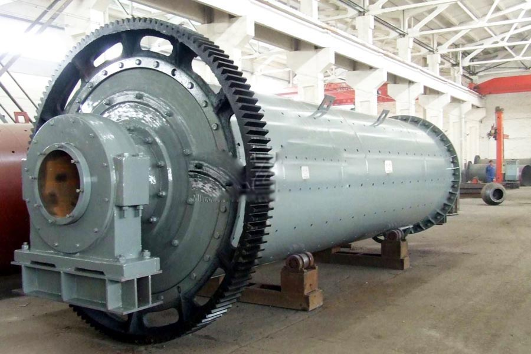

Construction waste crushing production line

Mobile construction waste crushing station for urban construction waste crushing.
South Africa cement making equipment supplier
South Africa cement making equipment supplier. Cement equipment, cement equipment, | cement machinery, cement equipment, cement production line, cement production line (cement equipment) is the production of cement equipment consisting of a series of cement production line equipment. Cement equipment include: cement rotary kiln, cyclone preheater, grate cooler.
What equipment is required equipment for cement, cement clinker calcining kiln is the main equipment, has been widely used in cement, metallurgy, chemical and other industries. The equipment consists of the cylinder, the support unit with gear wheel support means, drive in the cement industry will be required for cement production equipment is divided into two major categories of equipment and ancillary equipment. Customary points, transportation equipment, feeding feeding equipment, measuring equipment, dust collection equipment and transportation and engineering machinery.

Cement production line
Cement manufacturing consists of raw material grinding, blending, pre-calcining, clinker burning and cement grinding. In short, limestone and other materials containing calcium, silicon, aluminum and iron oxides are crushed and milled into a raw meal. This raw meal is blended and then heated in the pre-heating system(cyclones) to start the dissociation of calcium carbonate to oxide. The meal goes further into the kiln for heating and reaction between calcium oxide and other elements to form calcium silicates and aluminates at t a temperature up to 1450 centigrade: so called clinker burning.
South Africa cement making equipment for sale. The cyclone system is attached to the rotary kiln by a riser duct. Secondary fuel is fed to the riser duct, the main fuel mixture, coal/petcock, fires the kiln. Reaction products leave the kiln as a nodular material called clinker. The clinker will be inter ground with gypsum and other materials to cement.
Cement production line equipment, cement production line equipment, cement production line is one of the key production lines Zheng Henan mine machinery Co., the company has advanced production line of cement production equipment and a full set of industry-leading cement production process.
Cement making equipment
The equipments we use in this whole production line are vibrating feeder, Jaw crusher, impact crusher, cement ball mill, classifier, preheating system, cement rotary kiln and packing machine and so on. All the necessary equipments in this line can be provided by our factory. We have cement production line experts to design specific solutions for your preference.
Application of cement ball mill:
Cement ball mill is the key re-crush eqipment after the crushing. This type of Ball mill is widely used in cement, silicate products, new building materials, refractories, chemical fertilizer, black and non-ferrous metal ore-dressing, as well as the production industry of glass or ceramics, for carry though dry or wet grinding of a variety ores and other materials.
Cement mill, cement equipment, cement production line, cement production flow chart, cement mill manufacturer, cement mill is one of the major cement equipment, Henan Hongxing cement mill cement manufacturers in the production of equipment for 20 years, involved in design and production of a number of domestic medium-sized cement production line.
South Africa cement making equipment manufacturer. Cement production process, cement process, cement production line (equipment for cement) production equipment consisting of a series of cement production line cement equipment (the cement production process). Mainly by crushing and pre-homogenization, homogenization raw material preparation, preheat decomposition, cement clinker firing.
Leave Me A Message, Now
If you have any questions regarding equipment prices, production line configuration or other problems, you can send a message to us, we will contact you soon.